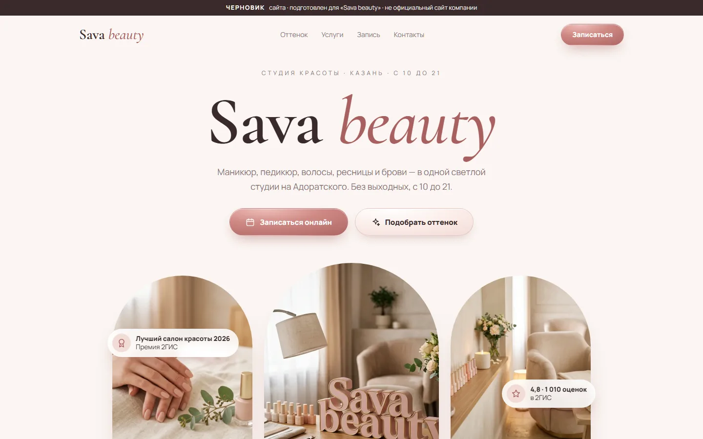
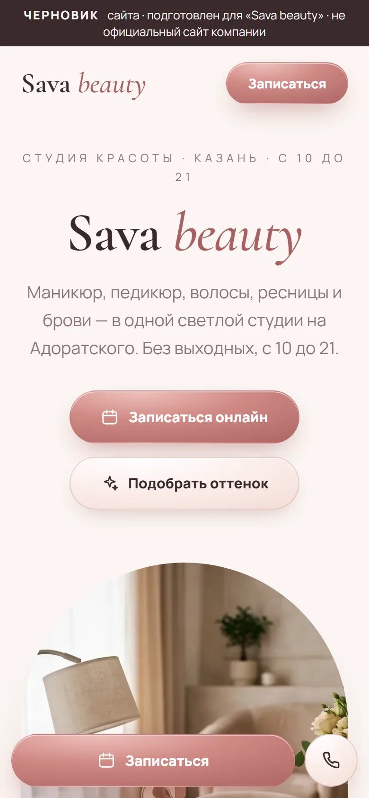

01
Маникюр и студии красоты
Стиль «Нежный журнал»
- Подборщик оттенка: клиент нажимает на флакон — ногти на рисунке перекрашиваются
- Запись в три шага с полоской прогресса
- Карусель услуг и контакты в виде открытки